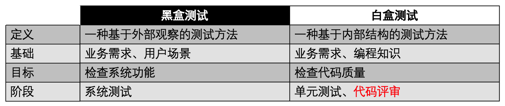
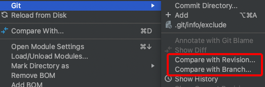

一、引言
黑盒测试犹如案发现场，只能根据表象推断事件经过。
代码评审即深入调查，挖掘蛛丝马迹的线索，揭示背后的真相。
“They think I am hiding in the shadows, but I am the shadows.”
二、黑盒测试与白盒测试的区别

黑盒测试存在一些局限性：
-
可能无法发现与系统实现相关的问题
-
可能无法覆盖所有的测试场景
-
测试效率较低，比如准备物料、模拟场景
-
强依赖需求文档，如果文档不全，测试会漏
对于测试人员来说，可以在代码评审阶段，通过白盒测试改进测试的质量和效率。
三、代码评审的定义和意义
代码评审，Code Review（CR），是一种通过检查代码来提高代码质量的过程。
对于测试人员来说，参与代码评审，可以尽量提前发现问题，减少修复代价，提高效能。
四、代码评审的形式
多人讨论
组织会议，研发牵头讲解代码，架构和测试参与，讨论交流。这是最普遍的一种形式。
Code Diff
查看 Code Diff，可以借助 Gitlab 或 IDEA，比较分支差异或版本差异。

对比时机：
-
提测前和测试中，自行走查代码
-
发现缺陷，定位代码原因
-
修复缺陷后，评估影响范围
-
上线前，是否夹带代码
精准测试
评估测试用例的代码覆盖率，查漏补缺，Jacoco 的 on-the-fly 模式支持动态收集代码覆盖率数据。
五、代码评审的方法
面向业务，面向业务，面向业务。重要的事情说三遍。
刚开始做代码评审，很容易把注意力集中在找代码规范问题上面，比如命名不规范、注释不清楚、代码实现冗长等。这些问题不是测试人员关注的重点，需要由研发团队或代码扫描工具来解决。
在做 Code Diff 时，也没必要把每个文件、每行代码的意思搞懂，比如研发对代码结构做了调整，在 diff 时要梳理清楚的话，ROI 会非常低，因为既消耗时间，又发现不了问题。
那该怎么做代码评审呢？ 关注业务：
-
跟需求文档比较，哪些需求是遗漏的，哪些代码是补充的，哪些代码是夹带的
-
关注核心业务代码逻辑，使用条件覆盖、路径覆盖等方法设计测试用例
-
优化测试用例，针对代码实现考虑异常、边界、幂等、并发等场景
代码评审要求测试人员具备代码能力，理解编程语言，掌握软件设计，熟悉代码结构和架构，多与开发同学交流，共同优化代码质量。
六、代码评审的实际案例
1、空指针异常
import org.mybatis.spring.SqlSessionTemplate;
import org.springframework.beans.factory.annotation.Autowired;
import org.springframework.stereotype.Service;
@Service
public class UserService {
private final SqlSessionTemplate sqlSessionTemplate;
@Autowired
public UserService(SqlSessionTemplate sqlSessionTemplate) {
this.sqlSessionTemplate = sqlSessionTemplate;
}
public void getUserById(String userId) {
User user = sqlSessionTemplate.selectOne("com.example.mapper.UserMapper.getUserById", userId);
System.out.println(user.getName()); // 可能导致空指针异常
}
}
如果取到的 user 对象为空，就会导致空指针异常。
2、String 类型判空用 StringUtils.isBlank()，Collection 类判空用 CollectionUtils.isEmpty()
import org.apache.commons.lang3.StringUtils;
public class ExampleStringUtils {
public static void main(String[] args) {
String str1 = "";
String str2 = null;
String str3 = " ";
if (StringUtils.isBlank(str1)) {
System.out.println("str1 is blank or null");
}
if (StringUtils.isBlank(str2)) {
System.out.println("str2 is blank or null");
}
if (StringUtils.isBlank(str3)) {
System.out.println("str3 is blank or null");
}
}
}
import org.apache.commons.collections4.CollectionUtils;
import java.util.ArrayList;
import java.util.List;
public class ExampleCollectionUtils {
public static void main(String[] args) {
List<String> list1 = new ArrayList<>();
List<String> list2 = null;
if (CollectionUtils.isEmpty(list1)) {
System.out.println("list1 is empty or null");
}
if (CollectionUtils.isEmpty(list2)) {
System.out.println("list2 is empty or null");
}
}
}
3、写操作的事务一致性
@Service
public class UserService {
private final UserMapper userMapper;
private final AccountMapper accountMapper;
// 省略构造方法
public void addUserAndDeductBalance(User user, double amount) {
try {
userMapper.insertUser(user); // 插入用户信息
accountMapper.deductBalance(user.getAccountId(), amount); // 扣除账户余额
// 其他写操作...
} catch (Exception e) {
// 处理异常
}
}
}
没有使用 @Transactional，不会进行事务管理和回滚，如果执行accountMapper.deductBalance()时异常，那么已经执行的 userMapper.insertUser() 操作无法回滚，用户信息被插入但账户余额未扣除，导致数据的不一致性。
4、根据判断条件补充用例
public class ECommerceSystem {
public static void main(String[] args) {
String productCategory = "electronics";
float productPrice = 999.99f;
int userPoints = 100;
if ("electronics".equals(productCategory)) {
if (productPrice > 1000) {
if (userPoints > 50) {
applyDiscount(0.2f);
} else {
applyDiscount(0.1f);
}
} else {
if (userPoints > 100) {
applyDiscount(0.15f);
} else {
applyDiscount(0.05f);
}
}
} else if ("clothing".equals(productCategory)) {
if (productPrice > 500) {
if (userPoints > 100) {
applyDiscount(0.3f);
} else {
applyDiscount(0.2f);
}
} else {
if (userPoints > 50) {
applyDiscount(0.1f);
} else {
applyDiscount(0.05f);
}
}
} else {
if (productPrice > 100) {
if (userPoints > 10) {
applyDiscount(0.1f);
} else {
applyDiscount(0.05f);
}
}
}
}
private static void applyDiscount(float discount) {
System.out.println("Applying discount of " + discount * 100 + "%");
// 执行折扣逻辑
}
}
复杂的判断条件，文档很可能描述不全所有场景，需要针对代码实现，补充测试用例。
5、代码放在不同位置，影响范围变小
public class ShoppingCart {
private List<Product> products = new ArrayList<>();
public void addToCart(Product product) {
products.add(product);
updateCartTotal();
}
public void removeFromCart(Product product) {
products.remove(product);
updateCartTotal();
}
private void updateCartTotal() {
float total = 0;
for (Product product : products) {
total += product.getPrice();
}
System.out.println("Cart Total: " + total);
}
}
public class Product {
private String name;
private float price;
// constructor, getters and setters
public float getPrice() {
return price;
}
}
如果需要更改计算总金额的逻辑，只需修改 updateCartTotal() 方法即可，而不需要修改调用该方法的其他部分代码，测试点更少，影响面更小。
6、for 循环性能优化
public class PerformanceOptimization {
public static void main(String[] args) {
List<Integer> numbers = Arrays.asList(1, 2, 3, 4, 5);
// 原始的 for 循环
long startTime = System.nanoTime();
for (int i = 0; i < numbers.size(); i++) {
int number = numbers.get(i);
System.out.println(number);
}
long endTime = System.nanoTime();
long elapsedTime = endTime - startTime;
System.out.println("原始 for 循环耗时: " + elapsedTime + " 纳秒");
// 使用增强 for 循环
startTime = System.nanoTime();
for (int number : numbers) {
System.out.println(number);
}
endTime = System.nanoTime();
elapsedTime = endTime - startTime;
System.out.println("增强 for 循环耗时: " + elapsedTime + " 纳秒");
}
}
如果 for 循环里面接口调用或计算量大，可能会导致性能问题。
7、finally 块的 return 覆盖 try-catch 块中的 return
public class ReturnInFinally {
public static void main(String[] args) {
System.out.println(testMethod());
}
public static int testMethod() {
try {
System.out.println("Inside try block");
return 1;
} catch (Exception ex) {
System.out.println("Inside catch block");
return 2;
} finally {
System.out.println("Inside finally block");
return 3;
}
}
}
如果确实需要在 finally 块中执行一些清理或资源释放操作，并希望保留 try-catch 块中的返回结果，可以将返回值存储在一个变量中，在 finally 块之后再进行返回。
8、多表同时更新，使用分布式事务
try {
// 开启分布式事务
beginDistributedTransaction();
// 执行事务操作1
updateTable1();
// 执行事务操作2
updateTable2();
// 执行事务操作3
updateTable3();
// 提交分布式事务
commitDistributedTransaction();
} catch (Exception e) {
// 回滚分布式事务
rollbackDistributedTransaction();
// 处理异常
handleException(e);
}
假设有两个服务，一个是订单服务，负责处理用户下单和创建订单；另一个是库存服务，负责管理商品的库存数量。当用户下单时，订单服务需要创建订单并扣减对应商品的库存。可能会出现数据不一致：在订单服务创建订单之后，库存服务还未扣减库存的情况下发生了故障，导致订单已经创建但库存没有被正确扣减。这会导致订单和库存之间的数据不一致。如果只是简单地依次执行两个操作，无法保证它们的原子性。
9、幂等
public class OrderService {
public String createOrder(OrderData orderData) {
// 生成订单号
String orderId = generateOrderId();
// 检查订单是否已经存在
if (!isOrderExist(orderId)) {
// 创建订单
saveOrder(orderId, orderData);
// 扣减库存
decreaseInventory(orderData);
return "订单创建成功";
} else {
return "订单已存在";
}
}
private String generateOrderId() {
// 省略具体实现
return "123456789";
}
private boolean isOrderExist(String orderId) {
// 省略具体实现
return false;
}
private void saveOrder(String orderId, OrderData orderData) {
// 省略具体实现
}
private void decreaseInventory(OrderData orderData) {
// 省略具体实现
}
}
如果发起重复请求，上个请求还未处理完，可能会重复创建相同订单。考虑使用分布式锁来保证接口的幂等性。
10、执行频率高的代码日志，增加级别判断
import org.slf4j.Logger;
import org.slf4j.LoggerFactory;
public class MyClass {
private static final Logger logger = LoggerFactory.getLogger(MyClass.class);
public void myMethod() {
// 判断日志级别是否为 INFO
if (logger.isInfoEnabled()) {
String message = "This is an info message.";
logger.info(message);
}
}
}
11、枚举类
public enum InvoiceStatus {
PENDING("待处理"),
APPROVED("已批准"),
REJECTED("已拒绝"),
CANCELLED("已取消"),
PAID("已支付");
// 省略定义
}
如果筛选几个枚举作为状态判断，可能不准确。
12、更多业务类案例：
-
代码未找到需求相关实现，参考需求文档
-
上下游接口字段未对齐，参考接口文档
-
修改了公共方法，回归范围扩大
-
修改了方法 A1，未修改方法 A2，A1 和 A2 是不同入口，都需要修改
七、总结
从业务需求角度出发，剖析代码逻辑，运用测试经验，以更高的效率，发现更多的缺陷，这就是代码评审带来的烧脑体验。